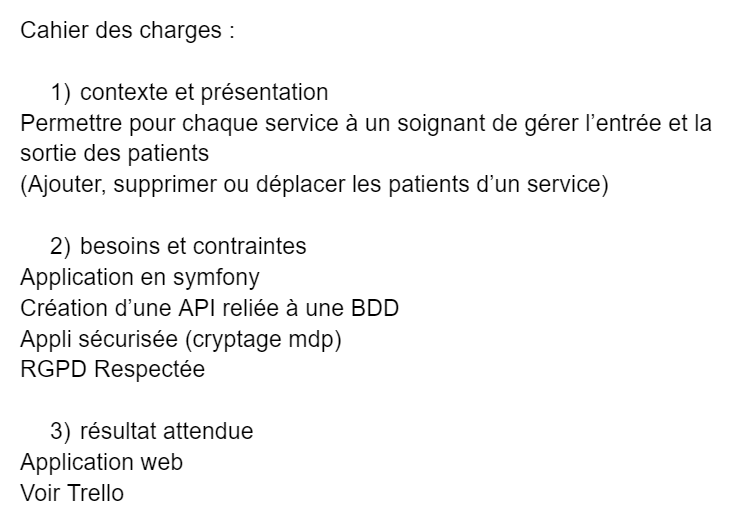
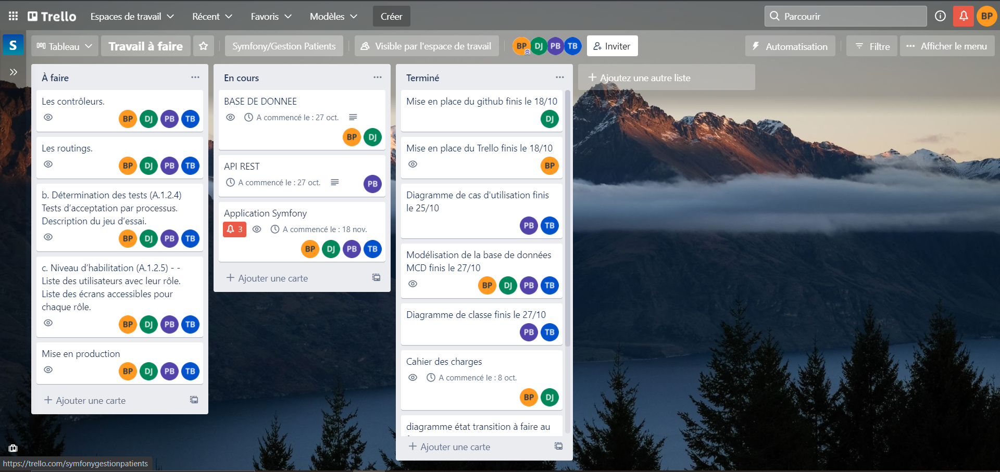
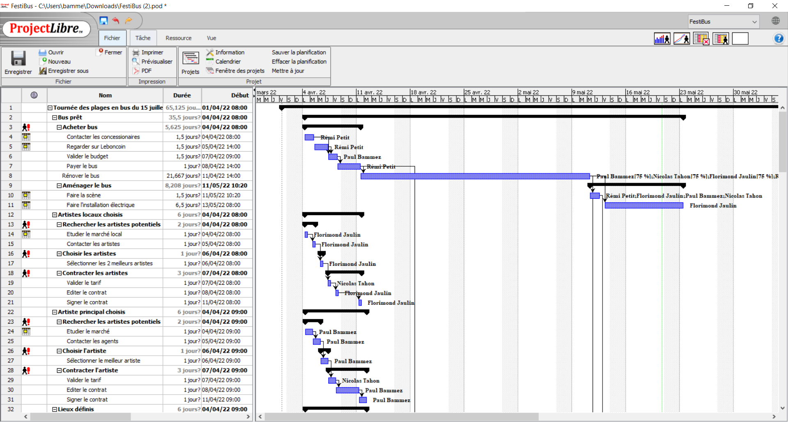
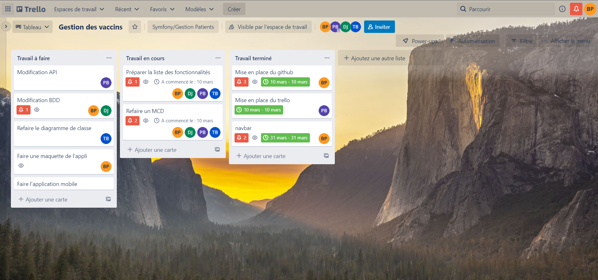

Travailler en mode projet
Analyser les objectifs et les modalités d’organisation d’un projet
Lors de nombreux projet y compris lors de mes stages chez FM LOGISTIC et aux Horloges Huchez
nous avions réalisé un cahier des charges permettant d'analyser les objectifs.
Prenons l'exemple du projet de gestion des patients à réaliser sous symfony, nous avons
réalisé le cahier des charges suivant :

Planifier les activités
Pour la plupart de nos projets, l'une des première chose que nous faisions était un trello afin de
planifier toutes les activités à réaliser. Ici il s'agit du trello pour le projet symfony de
la gestion des patients d'un hôpital.
Sur le trello nous mettons toutes les tâches à réaliser sous forme de cartes assignées à une
ou plusieurs personnes.

Nous avons également planifier un projet fictif, il s'agit d'un projet dont le but est
de rénnover un bus afin de faire le tour des plus belles plages de France pour y faire
un concert. Pour plannifier les activités nous avons notamment avec l'outil project libre
réalisé un diagramme de gantt.

Évaluer les indicateurs de suivi d’un projet et analyser les écarts
Sur nos trello, nous avions la possibilité de définir des dates limites pour les différentes tâches
à réaliser. En fonction de ces dates définies, on sait lorsque l'on a fini une tâche si nous
sommes dans les temps.
